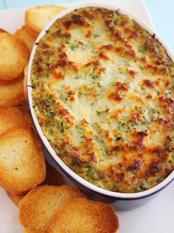

In addition to coding, reading and various crafts, I also enjoy cooking. What follows are a couple of recipes that I have found particularly enjoyable.
Appetizer
Baked Spinach and Artichoke Dip
- 2c. Parmesan Cheese
- 1 box Frozen Chopped Spinach, thawed
- 1 (14oz) can/jar of Artichoke Hearts, drained and chopped
- 2/3c. Sour Cream
- 1c. Cream Cheese
- 1/3c. Mayonnaise
- 2tsp. Garlic, minced
- 1tsp. Smoked Paprika
- 1/4c. Breadcrumbs
- 1T. of Parmesan Cheese
Preheat oven to 375°. Mix together the parmesan spinach and artichokes. Blend the sour cream, cream cheese, mayonnaise, garlic and paprika, and then combine with the spinach and artichoke mixture. Spread into a greased baking dish. In a small dish stir together the breadcrumbs and remaining parmesan cheese, and sprinkle the mixture over the top. Bake for 20-30 minutes, serve with toasted pita wedges or your favorite cracker. Yields 4 cups.
Soup
Shorba (A Middle Eastern Lentil Soup)
- 1 1/4c. Split Red Lentils
- 1/2c. Onions, chopped
- 1/2c. Celery, chopped
- 1/2c. Carrots, chopped
- 2 Garlic Cloves, minced
- 1T Olive Oil
- 4c. Chicken Stock
- 2c. Water
- 1 Bay Leaf
- 1/2tsp. Cumin
- 1/4 tsp. Tumeric
- Juice of 1 Lemon
- 2tsp. Kosher Salt
- 1/2tsp. Black Pepper, freshly ground if possible
Rinse and soak the lentils for 15-20 minutes, then drain. Heat the oil in a large pot over medium heat, and cook the onions, celery and carrots for 7-10 minutes - or until slightly translucent. Add the garlic and cook for another minute. Add the bay leaf, cumin and tumeric, stir until combined, then add the lentils, chicken stock and water. Cook for an additional 15-20 minutes or until the lentils have softened. Remove the bay leaf.
Optional - use a traditional or immersion blender to render the soup to your desired consistency (I like it blended together pretty well, it's much smoother. Note - it will expand when you blend it, so if using a traditional blender do not fill it all the way up.)
Add the lemon juice, season with salt and pepper to taste. Serves 6.
Entreé
Roasted Chicked and Vegetables

For Butter:
- 6T. Unsalted Butter, at room temperature
- 2tsp. Fresh Rosemary, chopped
- 2tsp. Fresh Thyme, chopped
- 1/2tsp. Lemon Juice
- 1/2tsp Kosher Salt
- 1/2tsp. Black Pepper, freshly ground if possible
- 3 Large Cloves Garlic, minced
For Chicken:
- One 6 1/2lb Chicken, rinsed and patted dry
- Kosher Salt and Black Pepper, freshly ground if possible
- 5 Sprigs Fresh Rosemary
- 5 Sprigs Fresh Thyme
- 1 Lemon, quartered
For Vegetables:
- 3T. EVOO
- 1tsp Fresh Rosemary, chopped
- 1tsp Fresh Thyme, chopped
- 1tsp. Kosher Salt, plus more for seasoning
- 1/2tsp. Black Pepper, freshly ground if possible, plus more for seasoning
- 6 Red Potatoes, quartered
- 4 Medium Carrots, peeled and halved lengthwise
- 2 Large Parsnips, peeled and halved lengthwise
- 2 Large Shallots, peeled and halved
- 2 Cloves Garlic, peeled
- 1/2c. Chicken Broth
Place your oven rack just below center, then preheat to 400°.
For the butter: Blend all ingredients until smooth.
For the chicken: Tuck the wings under the chicken. Sprinkle the cavity with salt and pepper, then add 2 T of the butter mixture. Place the rosemary, thyme and lemon quarters into the cavity and tie the legs loosely together with kitchen string. Place in a large roasting pan. Starting at the neck, loosen the skin of the entire chicken, and spread the remaining butter mixture over the outside and under the skin of the entire chicken, being careful not to tear the skin.
For the Vegetables: Toss all ingredients, except the broth, together in a large bowl. Arrange them around the chicken in a single layer, then add the broth.
Roast until the vegetables are tender and the chicken has reached an internal temperature of 160-165°, which should be about 1 1/2 hours. Let rest for 20 minutes before carving.
Dessert
Red Velvet Cake with Cream Cheese Frosting

For Cake:
- 2 1/2c. Cake Flour
- 1/2tsp. Salt
- 2T Cocoa Powder
- 1/2c. Unsalted Butter, at room temperature
- 1 1/2c. Granulated White Sugar
- 2 Large Eggs
- 1tsp. Pure Vanilla Extract
- 1c. Buttermilk
- 2T Liquid Red Food Coloring
- 1tsp. White Distilled Vinegar
- 1tsp. Baking Soda
For Frosting:
- 1 8oz. pkg. of Cream Cheese
- 1 8oz. container of Mascarpone Cheese
- 1tsp. Pure Vanilla Extract
- 1c. Confectioners' Sugar, sifted
- 1 1/2c. Heavy Whipping Cream or Double Cream (35-40% butterfat), very cold
For the Cake: Place your oven rack just below center, then preheat to 350deg. Grease two 9-in round cake pans and line the bottoms with parchment paper.
In a mixing bowl sift together the flour, salt and cocoa powder, set aside. In your electric mixer (or other mixing bowl if mixing by hand) beat the butter until soft and then cream in the sugar until light and fluffy. Add the eggs one at a time, beating well after each one. Scrape down the sides of the bowl and add the vanilla - beat until combined.
In a measuring cup whish the buttermilk with the red food coloring. Starting with the flour alternate adding the flour mixture and the buttermilk mixture to the batter. Use three additions, and end with the last of the flour.
In a small cup, combine the vinegar and baking soda. Allow it to fizz and then quickly fold into the cake batter.
Working quickly, before the bubbles forming in the batter have dissipated, divide the batter evenly between the two pans you prepared and smooth down the tops. Bake for 25-30 minutes or until a toothpick inserted into the center comes out clean. Cool the cakes in their pans on a wire rack for 10 minutes, then, using the wire rack, invert the cakes and remove the pans. Once they are completely cooled, wrap in plastic and refrigerate overnight.
For the Frosting: In your electric mixer beat the cream cheese and mascarpone cheese until smooth. Add the vanilla and confectioners' sugar and beat until smooth again. Using the whisk attachment gradually add the heavy cream until it is thick enough to spread. Add more sugar or cream as needed to get the correct consistency.
Note: You must use cream that whips easily to stiff peaks. If yours does not, whip it to stiff peaks separately then fold it into the cheese mixture.
To Assemble: Using a serrated knife, cut each layer in half lengthwise so you end up with 4 rounds. You may cut the tops off the cakes to make them even if desired, it is recommended as it will make it easier to assemble. Starting with Your first cake round cut side down on your cake platter, spread frosting across the entire layer, and then add another round on top. Repeat with all rounds, then frost the top and sides. Garnish with crumbs from cut cake or toasted coconut. Serves 10-12.
I've always really enjoyed cooking for my family and friends, but I've never considered it as a career since my father is a chef - the hours are terrible. ☻
I've made all the above recipes, and can recommend them all. The dip is awesome for parties and travels well if you need to take it somewhere, the soup is great for a cold day, the chicken is excellent for a dinner party or a night in, and the cake is my personal favorite.
Also, this picture is awesome.
Feel free to use the contact me button in the footer to email me with any questions. Thanks!